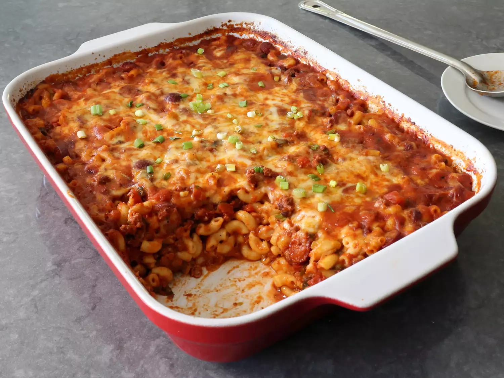

Chili Dog Mac and Cheese

Description
This chili dog mac and cheese combines two of my favorite things to eat—chili dogs and mac and cheese—and manages not to taste all that much like either one, while being wildly successful at being stupendously delicious.
Ingredients
- 3 eggplants, peeled and cut lengthwise into 1/2 inch thick slices
- ½ cup seasoned bread crumbs
- ½ cup grated Parmesan cheese
- 1 tablespoon olive oil
- 1 (16 ounce) box penne pasta
- 2 onions, chopped
- 1 clove garlic, minced
- 4 cups shredded Italian cheese blend
- 2 tablespoons dried parsley
- 1 (15 ounce) jar pesto sauce
- 1 ½ cups milk
- ¼ teaspoon ground cinnamon
- ½ teaspoon ground nutmeg, divided
- 1 (8 ounce) can tomato sauce
- ½ cup red wine
- 1 egg, beaten
- 4 cups milk
- ½ cup butter
- 6 tablespoons all-purpose flour
- ground white pepper, to taste
- 1 ½ cups freshly grated Parmesan cheese
Steps
- Add olive oil to a large pot and place over high heat. Add beef; cook and stir, breaking up with a spoon or spatula, about 2 minutes. Add onions and salt, and cook, stirring, until beef is crumbly, and onions turn translucent, about 5 minutes.
- Add the chili powder, cumin, paprika, black pepper, cinnamon, cayenne, dried oregano, and garlic. Cook, stirring, for about 2 minutes.
- Add peppers, sliced hot dogs, crushed tomatoes, and water. Stir together; bring the mixture to a simmer. Reduce heat to medium-low and simmer, stirring occasionally, until cooked to your taste, at least 30 minutes. Taste and adjust seasoning.
- Once chili is nearly ready, fill a large pot with lightly salted water and bring to a rolling boil. Stir in macaroni and return to a boil. Cook pasta uncovered, stirring occasionally, 1 minute less than specified in package directions, until not quite tender, and still firm to the bite, about 8 to 11 minutes.
- Meanwhile, preheat the oven to 400 degrees F (200 degrees C).
- Turn off heat under chili, drain macaroni, and add to the pot of chili. Stir until combined, and transfer mixture into a large, deep (15x10-inch) baking dish.
- Mix Cheddar and Monterey Jack cheeses together in a bowl, and transfer about 60% of cheese to top of chili mixture. Use a spoon to thoroughly mix cheese into the casserole.
- Apply remaining cheese evenly over the top, and lightly poke down into the surface with the tip of a spoon.